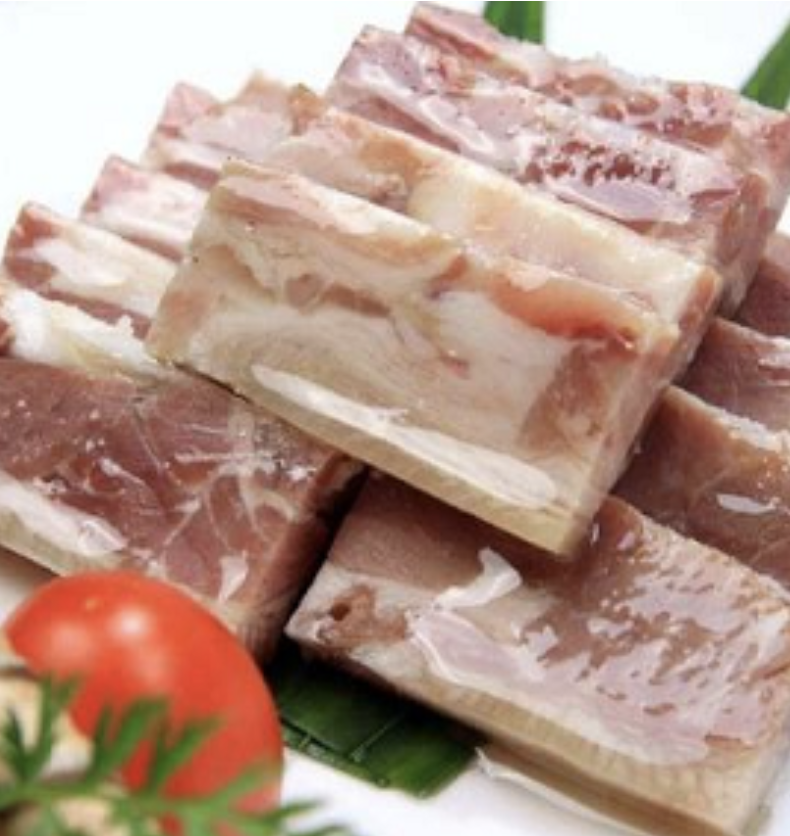

#28 - PORK JELLY - 水晶肴肉
This is a delicacy in Shanghainese restaurants. People always wonder how it is made and think it must take lots time and work to make it. My mother discovered that it is actually very easy by using a very commonly found ingredient from the market
and figured out how to make it. Several of my friends have asked me for the recipe after having it at my home. Thus developed this recipe.

INGREDIENTS:
- 1 Salted pork knuckle (鹹豬手)
- ½ tsp Gelatin powder
- 2 slices Ginger
- 2 TBSP Zhejiang vinegar
- 1/2 tsp grated ginger
Directions:
- Remove the pork knuckle from its packing and rinse with cold water.
- Blanch the pork knuckle in boiling water with a few slices of ginger.
- Wash the pork knuckle and remove the remaining hair on the knuckle with a tweezer.
- Put the pork knuckle in a pot that is large enough so the knuckle lay flat. Put enough water in the pot so the knuckle is submerged 2-inch below the water.
- Bring the water to boil. Skim off the scum from the top, turn the heat to low, cover the lid and let it simmer for 1 ½ hour.
- Check the water level every 30 minutes and turn the knuckle upside down half way through.
- Add more water if it is almost dry up.
- Use a chopstick to poke the knuckle. If the chopstick goes in without much resistance, it is done.
- Remove the knuckle from the sauce and let it cool.
- Put the sauce in a saucepan. Condense the sauce on high heat down to about 1 cup.
- Add the gelatin powder and stir to dissolve.
- Remove skin from the knuckle. Try to keep it in one piece.
- Debone the meat, put it on a chopping board, and chop the meat coarsely.
- Find a counter about 500ml size. Lay the pork skin down flat on the bottom with the skin top facing down.
- Pour some sauce on top, just until it just covers the top of the meat. Leave the rest of the sauce on the counter (not in the refrigerator).
- Put the meat into refrigerator for 1-2 hours, until it becomes jelly-like.
- Remove from the refrigerator. Remove the fat layer formed on the top, and then pour the rest of the sauce on top.
- Put it back into the refrigerator and refrigerate for at least 4 hours, or overnight.
- When ready to serve, remove it from the refrigerator.
- Scrape off the fat on top of the jelly, slide a knife along the edge of the container, and flip the jelly out.
- Slice into ½-inch thick slices and plated it.
- Mix the Zhenjiang vinegar鎮江醋 with the grated ginger in a sauce dish and serve with the pork jelly.
(Serves 1 person)
Note:
- You may find the salted pork knuckle in the supermarket. It is sometimes labelled as “German salted Pork knuckle”.